Takizawa
Takizawa · Iwate
Takizawa
Highlighted on the Iwate map.
Stay
No listed places to stay in Takizawa — nearest options in Morioka.
Dining
満州ニラら～めんの店 さかえや 盛岡本店
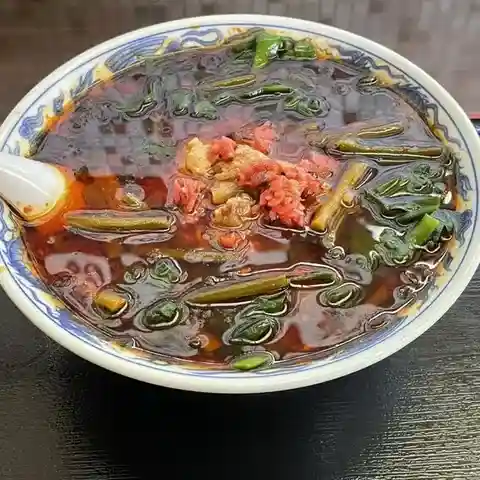
Manshuu Nira Ra ~ Menno Mise Sakaeya Morioka Honten
Ramen shop in Takizawa, Iwate.
佐野家
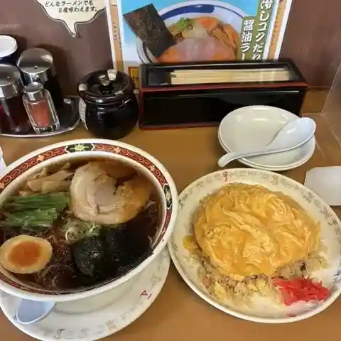
Sano Ie
Ramen shop in Takizawa, Iwate.
天ぷら桂
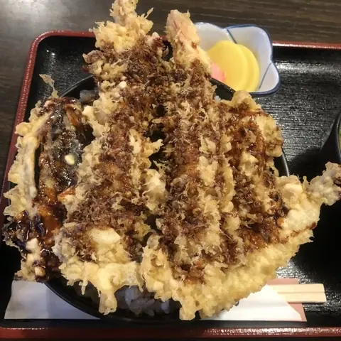
Tenpura Katsura
Tempura restaurant in Takizawa, Iwate.
ごはん屋 山ひろ
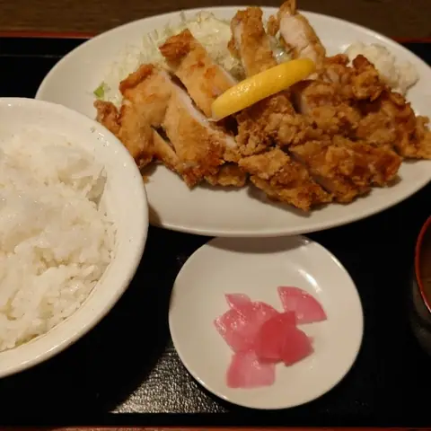
Gohan Ya Yama Hiro
Chicken restaurant in Takizawa, Iwate.
中華そば ちくりん
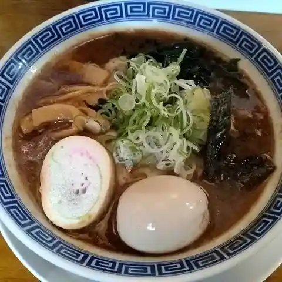
Chuuka Soba Chikurin
Ramen shop in Takizawa, Iwate.
回転寿司すノ家 国分店
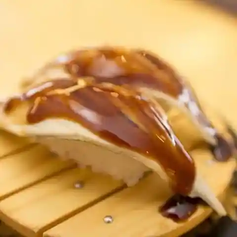
Kaitenzushi Su No Ie Kokubun Mise
Conveyor-belt sushi in Takizawa, Iwate.
柏屋
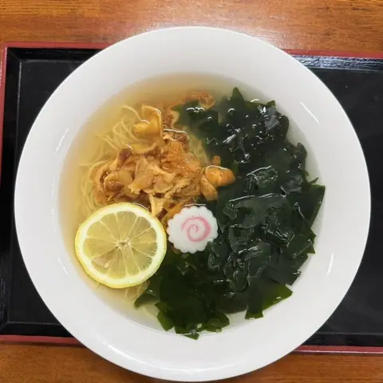
Kashiwa Ya
Izakaya in Takizawa, Iwate.
かつ壱 大釜店
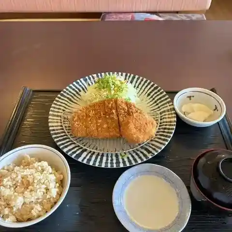
Katsu Ichi Ookama Mise
Tonkatsu restaurant in Takizawa, Iwate.
すし松
Sushi Matsu
Sushi restaurant in Takizawa, Iwate.
畠山旅館 更科八
Hatakeyama Ryokan Sarashina Hachi
Ryokan restaurant in Takizawa, Iwate.
そば処 熊谷
Soba Tokoro Kumagaya
Soba restaurant in Takizawa, Iwate.
麺やきぶし
Men Yakibushi
Ramen shop in Takizawa, Iwate.
ペレニアルロックガーデン春子谷地 cafe ミルクの里
Pereniarurokkugaaden Haruko Yachi Cafe Miruku No Sato
Café in Takizawa, Iwate.
なると
Naruto
Ramen shop in Takizawa, Iwate.
焼肉ハウスＯＫ牧場
Yakiniku Hausu O K Bokujou
Yakiniku (grilled meat) restaurant in Takizawa, Iwate.
マイヤーリング
Maiyaaringu
Cake shop in Takizawa, Iwate.
チニタ
Chinita
Soup-curry restaurant in Takizawa, Iwate.
松ぼっくり
Matsu Bokkuri
Gelato and ice-cream shop in Takizawa, Iwate.
滝沢手打ちそば道場
Takizawa Teuchi Chisoba Doujou
Soba restaurant in Takizawa, Iwate.
たぬ吉
Tanu Kichi
Soba restaurant in Takizawa, Iwate.
北都茶屋
Hokuto Chaya
Shokudo diner in Takizawa, Iwate.
Do
Do
Shokudo diner in Takizawa, Iwate.
中華そば 松風
Chuuka Soba Matsukaze
Ramen shop in Takizawa, Iwate.
旨いとんかつ あけと
Umai Tonkatsu Aketo
Tonkatsu restaurant in Takizawa, Iwate.
Sights
Pet no Sato Campsite
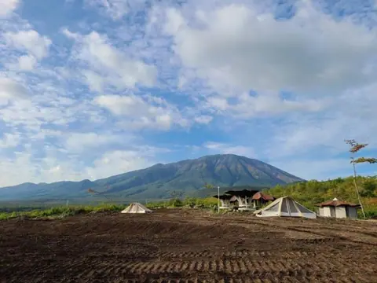
The campground is located within the Pet Village, a shelter for dogs and cats.
Kibo Suikei Iwanakan
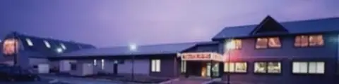
The "Iwana" grown using the abundant spring water from Mt. Iwate is one of the best in the world.
Fureai Joint Farm-Produce Market
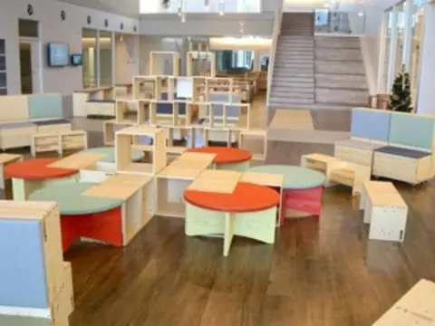
Agricultural products joint sales office Fureai
Morioka Truck Station Yamaboshi
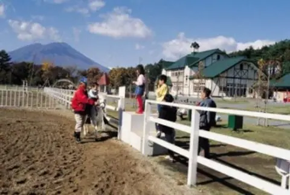
This is a truck station along National Route 4.
Big Roof Takizawa
Big Roof Takizawa consists of a community center, library, antenna shop, and restaurant, and is a complex facility that can be enjoyed by people of all ages.
Weekend Jumbo Market
This is a lively indoor market that sells everything from bargain meat, fresh fish, vegetables and fruits to tofu, pickles, alcohol, and daily necessities.
Chagu Chagu Farm-Direct Market
We are a direct producer that focuses on Takizawa products, including wild vegetables in spring, Takizawa watermelons and flowers in summer, apples and sweet potatoes (quick sweet) in fall,
Goryu Wisteria
This wisteria is located in the precincts of Kakunokake Shrine, and is said to be 200 to 300 years old.
Takizawa Nature Information Center
It opened in 2009, and the promenade was completed in November.
Onikoshi Sozen Shrine
In 1597, a horse in Sawauchi village became unruly while playing in the field, ran all the way to Takizawa, and died.
Takizawa Forest Park/Nature Center
A vast forest park and a bird-watching forest within it. The natural forest, which is a mix of coniferous and broad-leaved trees, is home to a variety of animals, including the fictive flycatcher, great tit, and squirrel, making it a paradise for creatures.
Takizawa Buried Cultural Properties Center Historical Site Park “Yubuzawa Stone Ring”
Takizawa Buried Cultural Properties Center Historical Site Park “Yubuzawa Stone Ring”
Mt. Kurakake
Mt. Kurakake, located at the foot of Mt.
Mt. Iwate (Takizawa City)
Mt. Iwate, known as "Nanbu Katafuji", has an altitude of 2,038 meters.